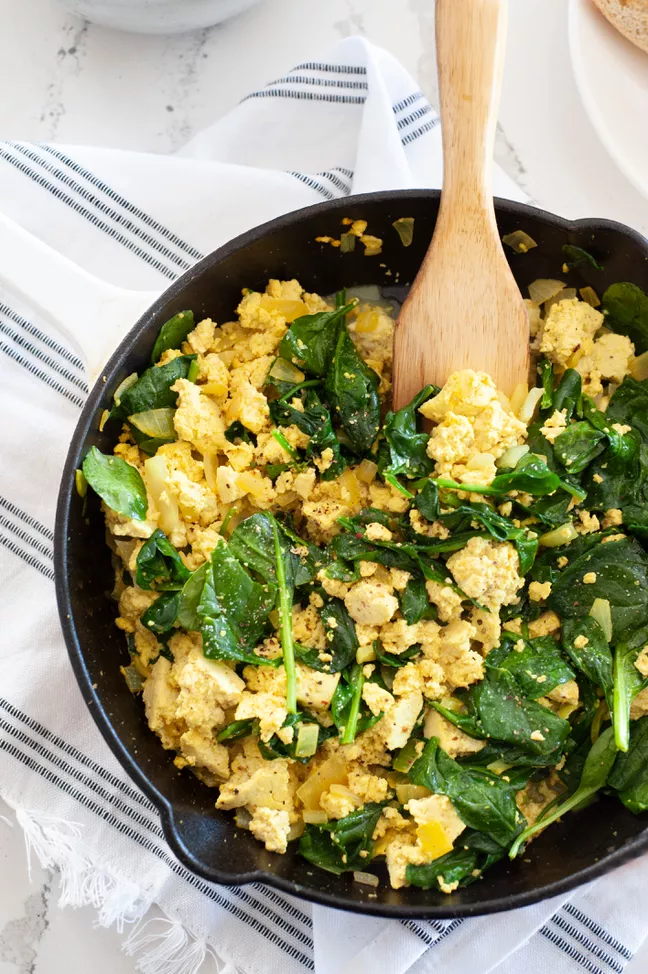

Description
Think of tofu scramble as a hearty yet healthy dish in its own right, and not a second-class stand in for eggs. Tofu scramble takes minutes to make, utilizes ingredients you have on hand, and is packed with protein.
Ingredients
- 1 tablespoon extra virgin olive oil
- 1/2 (about 1/2 cup) yellow onion, diced
- 1 pound firm or extra firm tofu packed in water, drained well
- 1 teaspoon nutritional yeast
- 1/2 teaspoon kosher salt, plus more to taste
- 1/4 teaspoon freshly ground black pepper, plus more to taste
- 1/4 teaspoon ground turmeric
- 4 cups loosely packed fresh spinach leaves
- 1/4 teaspoon lemon juice
Steps
- Cook the onion
- Add the tofu and seasonings
- Add the spinach, wilt, and finish with lemon juice